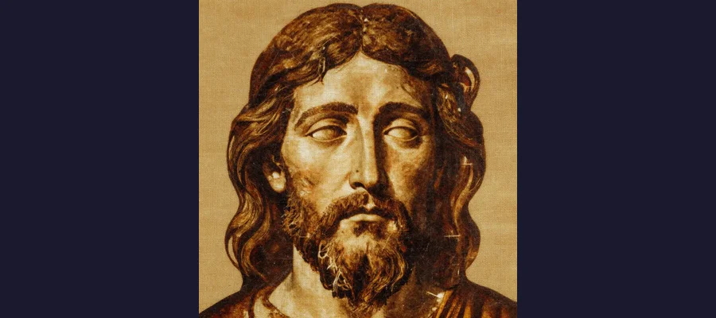
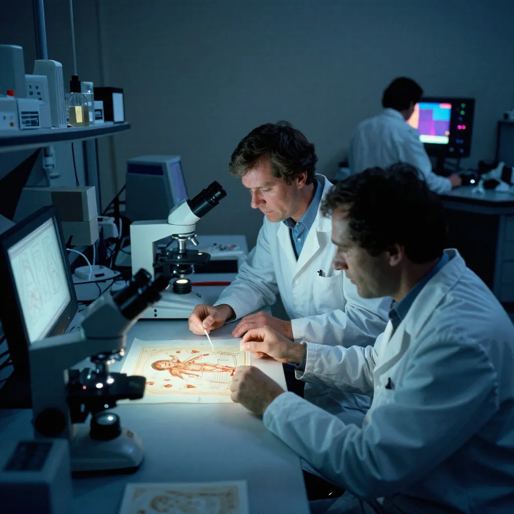

Shroud of Turin: The 14-Foot Linen That Science Still Can't Explain

The Shroud of Turin, a 14-foot linen cloth bearing the mysterious image of a crucified man, has been venerated for centuries and studied by scientists seeking to explain its origin.
In a climate-controlled case inside the Cathedral of Saint John the Baptist in Turin, Italy, lies a length of linen cloth that has inspired more scientific scrutiny, religious devotion, and furious debate than perhaps any other object on Earth. The Shroud of Turin measures approximately 4.4 meters long by 1.1 meters wide (14.3 by 3.7 feet), and on its surface, in faint amber-brown tones, is the front and back image of a crucified man — his hands crossed over his pelvis, his eyes closed, his body bearing the marks of a brutal execution. Whip lashes on the back. Nail wounds in the wrists and feet. A puncture wound in the side. Blood pooled around the scalp in patterns consistent with a crown of thorns.
For centuries, millions of Christians have venerated the Shroud as the actual burial cloth of Jesus of Nazareth, the linen wrap described in the Gospels that covered his body in the tomb. Scientists have spent decades trying to determine whether the image is a miraculous imprint, a natural phenomenon, or a medieval forgery. The answer, after more than a century of increasingly sophisticated testing, remains astonishingly unclear. Every time one side of the debate seems to have won, new evidence emerges to reopen the question.
The Shroud of Turin is not merely a religious relic. It is a scientific puzzle of the first order — an object that has been subjected to radiocarbon dating, spectroscopic analysis, blood chemistry tests, pollen analysis, textile studies, and computational image processing, and still refuses to yield a definitive answer. Like the Voynich Manuscript or the Rosetta Stone before its decipherment, it sits at the boundary between what we can investigate and what we cannot quite explain.
The Photograph That Changed Everything
For most of its documented history, the Shroud was simply a faded old cloth with a barely visible stain that some people claimed looked like a human figure. It first appears in the historical record in the 1350s, when a French knight named Geoffrey de Charny displayed it in a church he founded in the small town of Lirey, France. De Charny never explained how he acquired it. A local bishop later declared it a forgery, and for centuries the Shroud circulated among European nobility, eventually landing in Turin in 1578, where it has remained ever since.
Everything changed in May 1898. An Italian amateur photographer named Secondo Pia was given permission to photograph the Shroud during a public exhibition. Pia set up his equipment and exposed glass-plate negatives of the cloth. When he developed the plates in his darkroom, he was stunned. The photographic negatives revealed something invisible to the naked eye: the image on the Shroud was itself a negative. When reversed, the faint, murky marks resolved into a detailed, anatomically precise image of a man — far clearer and more detailed than what could be seen on the cloth itself.
The implications were electrifying. A negative image implied a level of sophistication that seemed difficult to attribute to a medieval forger working in the 1350s. Photography had not been invented until the 1820s. How could a medieval artist create an image that only became clear when photographed and inverted? The Secondo Pia photographs launched the modern scientific investigation of the Shroud and turned it from a curiosity into a phenomenon.
- The Shroud first documented in the 1350s in Lirey, France, displayed by knight Geoffrey de Charny
- Secondo Pia's 1898 photographs revealed the image was a photographic negative — decades before such a technique could be understood
- The Shroud has resided in Turin, Italy since 1578, housed in the Cathedral of Saint John the Baptist
- The cloth measures 4.4 x 1.1 meters and bears the front and back image of a crucified man
- In 2002, a controversial restoration removed patches and a backing cloth added after a 1532 fire
📷 The Fire of 1532
The Shroud narrowly escaped destruction on December 4, 1532, when a fire broke out in the Sainte-Chapelle in Chambéry, France, where the cloth was stored in a silver reliquary. The heat melted the silver, and molten metal burned through the folded linen in several places, creating a distinctive pattern of triangular burn holes and scorch marks that are still visible today. The Shroud was doused with water to extinguish the flames, and later repaired by nuns who sewed patches over the damaged areas. Some researchers have argued that the water, smoke, and heat from the 1532 fire could have affected subsequent radiocarbon dating results by introducing carbon contaminants.

The haunting face on the Shroud of Turin — a negative image that became visible only when photographed in 1898, revealing detail invisible to the naked eye.
Science vs. Faith: The 1988 Radiocarbon Bombshell
In 1988, the Vatican finally granted permission for radiocarbon dating of the Shroud. Samples were cut from a corner of the cloth and sent to three independent laboratories: the University of Oxford, the University of Arizona, and the Swiss Federal Institute of Technology (ETH) in Zurich. The results, published in the journal Nature in 1989, were devastating to believers: all three laboratories dated the cloth to between 1260 and 1390 CE, with a 95% confidence interval. This placed the Shroud squarely in the medieval period, consistent with its first documented appearance in the 1350s.
The conclusion seemed clear: the Shroud was a medieval forgery, not a first-century relic. The media declared the case closed. But almost immediately, questions arose about the testing methodology.
The Corner Sample Controversy
The most persistent criticism centers on where the sample was taken: a single corner of the cloth, specifically chosen because it was already damaged and could be cut without marring the image. In 2000, researchers Sue Benford and Joseph Marino published an analysis arguing that this corner area contained medieval repair threads woven into the original fabric — an "invisible reweave" of the type commonly practiced in medieval textile repair. If the sample contained a mixture of original first-century linen and medieval repair thread, the radiocarbon date would fall somewhere in between, exactly as the 1988 results indicated.
Critics of the 1988 test also point out that the corner was the area most contaminated by centuries of handling, the 1532 fire, and various environmental exposures. No radiocarbon-dating expert has formally endorsed the medieval repair theory, and the 1988 results remain the scientific consensus. But the controversy has never fully subsided, and no new samples have been permitted for testing.
🧬 The Sudarium of Oviedo
A separate relic known as the Sudarium of Oviedo, a face cloth kept in the Cathedral of San Salvador in Oviedo, Spain, has been linked to the Shroud through forensic analysis. The Sudarium, which has a documented history traceable to the 7th century (far earlier than the Shroud's 1350s appearance), bears bloodstain patterns that some researchers claim match the facial blood patterns on the Shroud of Turin. The blood type on both cloths has been reported as type AB. If the Sudarium and the Shroud covered the same body, it would imply the Shroud predates the medieval period, since the Sudarium's history extends much further back. However, this connection remains debated, and the Sudarium itself has not been conclusively dated to the first century.

The 1978 STURP team spent 120 hours examining the Shroud with state-of-the-art equipment, concluding the image was not painted but a surface-level oxidation of linen fibers.
STURP and the Image That Is Not Painted
Long before the 1988 radiocarbon tests, the Shroud had been the subject of intense scientific interest. The most ambitious investigation was the Shroud of Turin Research Project (STURP), a team of approximately 30 American scientists who spent over two years planning a comprehensive examination and then conducted 120 continuous hours of testing in Turin in October 1978. The team brought several tons of equipment and worked in shifts around the clock for five days.
STURP's findings were extraordinary. The most important conclusion was stated plainly: the image is not painted. No pigments, no brush strokes, no artists' materials of any kind were found on the image areas. Spectroscopic analysis showed that the image resulted from surface oxidation and dehydration of the linen fibers — the topmost layer of fibers had been chemically altered in a way that darkened them, but only to a depth of about 200 nanometers, roughly one-fifth the thickness of a human hair. This is consistent with a brief, intense energy transfer, not with the application of any known pigment or dye.
The bloodstains, however, were a different matter. STURP confirmed the presence of real blood on the cloth — specifically, hemoglobin and other blood components — not paint or pigment. The blood appears to have been on the cloth before the body image formed, since the image does not appear under the bloodstains. This detail is significant: a forger would have had to apply real blood first and then create an image around it, adding another layer of complexity to any hypothetical forgery.
- STURP (1978): 30 scientists, 120 continuous hours of testing, several tons of equipment
- Conclusion: the image is not painted — no pigments, dyes, or artists' materials found
- The image results from oxidation of linen fibers to a depth of only ~200 nanometers
- Real blood (hemoglobin) confirmed on the cloth, applied before the body image formed
- Pollen analysis by Max Frei identified species from Jerusalem, Turkey, and Europe consistent with the Shroud's proposed historical path
- The image has 3D encoding properties — intensity correlates with cloth-to-body distance, discovered by VP-8 image analyzer
🌍 Pollen, Coins, and Hidden Texts
Swiss criminologist Max Frei analyzed sticky-tape samples taken from the Shroud's surface and identified pollen grains from plant species native to the Judean desert, Anatolia (Turkey), and Europe — consistent with a cloth that had traveled from the Middle East through the Byzantine Empire to Western Europe. Other researchers have claimed to find images of coins over the eyes of the figure (identified as Roman lepta of Pontius Pilate, minted around 29 CE) and faint lettering around the face in Greek, Latin, and Aramaic. These claims remain highly controversial and have not been widely accepted by mainstream scholarship, but they illustrate the extraordinary lengths to which researchers have gone to extract information from this single piece of linen. Like scholars studying the Dead Sea Scrolls or decoding the Antikythera Mechanism, Shroud researchers continue to push the boundaries of what technology can reveal.
How Was the Image Formed?
The question of how the image was created remains the central mystery. Several hypotheses have been proposed, none entirely satisfactory:
The Maillard reaction hypothesis suggests that ammonia and other gases released by a decomposing body reacted with trace substances on the linen surface, creating the image through a chemical process. This is plausible but has not been demonstrated to produce an image of comparable quality and detail. The radiation burst hypothesis proposes that a brief, intense emission of energy — ultraviolet light, protons, or another form of radiation — scorched the surface fibers. In 2022, Italian researchers using X-ray analysis (wide-angle X-ray scattering) concluded that the Shroud's linen showed characteristics consistent with ancient rather than medieval aging, adding fuel to this theory. The contact hypothesis suggests the image resulted from direct physical contact between the body and the cloth, but this cannot explain the image's photographic negative quality or its 3D encoding properties.
The medieval forgery hypothesis remains the simplest explanation: a skilled medieval artist created the image using techniques now lost. But no one has successfully replicated the Shroud's specific characteristics using known medieval materials and methods, despite numerous attempts. The image's superficiality (only the topmost fibers), its negative quality, and its 3D spatial encoding remain stubbornly difficult to reproduce.
✨ The Mystery Endures
The Shroud of Turin sits at a unique intersection of science, faith, and history. The 1988 radiocarbon date says medieval. The STURP analysis says the image is not painted. The blood chemistry says real blood. The negative-image quality says something beyond medieval capability. The textile analysis says the weave pattern is consistent with first-century Jewish burial practices. Each line of evidence points in a slightly different direction, and no single theory accounts for all of them simultaneously. Perhaps the Shroud is the most sophisticated forgery in human history, created by a genius whose techniques have never been equaled or explained. Perhaps it is something else entirely — a natural phenomenon we do not yet understand, or even the burial cloth of a man crucified in first-century Judea. What makes the Shroud compelling is not that it proves or disproves any particular belief, but that after a century of the most intensive scientific scrutiny any object has ever received, it still has not given up its secret. In an age where we can date rocks on Mars and sequence the DNA of Neanderthals, a simple piece of linen continues to resist our best efforts to classify it. The Great Sphinx has its riddle. The Shroud of Turin has its image. And both, for now, remain unsolved.
Frequently Asked Questions
Has the Shroud of Turin been scientifically proven to be a forgery?
The 1988 radiocarbon dating results dated the cloth to between 1260 and 1390 CE, which is the primary scientific basis for the forgery theory. However, the dating results have been challenged on several grounds, including the possibility that the tested sample came from a medieval repair area rather than original fabric, and that contamination from the 1532 fire and centuries of handling could have affected the results. No scientific test has conclusively explained how the image was formed, and the STURP team's 1978 investigation found no evidence of paint, pigments, or dyes. The question remains scientifically open.
What is the Shroud of Turin made of?
The Shroud is a single piece of linen cloth woven in a three-to-one herringbone twill pattern, a relatively complex weave that was known in the ancient Middle East but was also used in medieval Europe. The cloth measures approximately 4.4 meters (14.3 feet) long by 1.1 meters (3.7 feet) wide. The herringbone pattern is one of the details cited by proponents of authenticity, as this specific weave type has been found in ancient Jewish textiles from the first century, though it was not exclusive to that period.
Can anyone see the Shroud of Turin?
The Shroud is housed in the Cathedral of Saint John the Baptist in Turin, Italy, but it is not always on public display. The Vatican, which has custody of the Shroud, authorizes periodic public exhibitions called ostensions. The most recent public display was in 2015. Between exhibitions, the Shroud is stored in a climate-controlled case designed to protect it from light, humidity, and temperature fluctuations. High-resolution digital images are available online for those who cannot visit in person.
What blood type is on the Shroud of Turin?
Multiple tests have identified the blood on the Shroud as type AB, a relatively common blood type in the Middle East. The same blood type has also been reported on the Sudarium of Oviedo, the separate face cloth that some researchers believe was used to cover the same body. The blood has been confirmed as human hemoglobin through immunological and spectroscopic tests, though some critics have argued that the blood could be a medieval application of actual blood rather than evidence of ancient origin.
Sources & References
- Wikipedia: Shroud of Turin — Comprehensive overview of history, scientific analysis, and religious significance
- Wikipedia: Radiocarbon Dating of the Shroud of Turin — The 1988 tests, methodology, and ongoing criticisms
- Britannica: Shroud of Turin — Overview of the relic, its history, and the debate over its authenticity
- Shroud.com: The 1978 Scientific Examination — STURP investigation overview and findings
- Shroud of Turin Official: STURP — Team composition, methodology, and conclusions
- ASNT: The Mysteries of the Shroud of Turin — Nondestructive testing perspective on image analysis
- Wikipedia: Sudarium of Oviedo — The companion face cloth and its potential connection to the Shroud
📖 Recommended Reading
Want to learn more? Check out The Jesus Discoveries: 10 Historic Finds That Bring Us Face-to-Face with Jesus: Jeremiah J. Johnston: 9780764243660 on Amazon for a deeper dive into this fascinating topic. (As an Amazon Associate, we earn from qualifying purchases.)